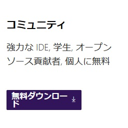
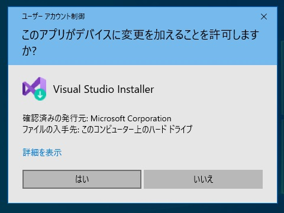
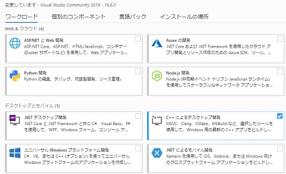
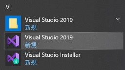
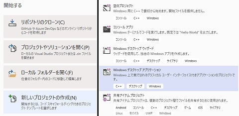
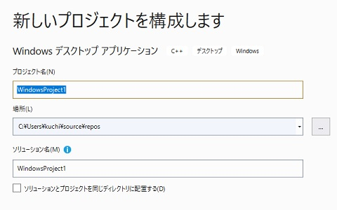
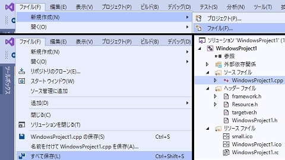
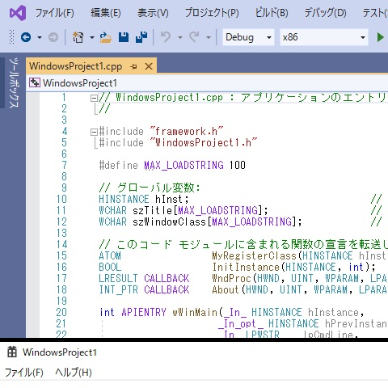

C++講習/環境構築
概要
多くのPCでは、プログラミングのための環境が整っていません。
全てのC++講習では、Visual Studioという開発環境を用意します。
物理部のPCを使う場合は、すでに用意されているので、インストールはしなくて構いません。
重要語
Visual Studio
今回利用する開発環境
プロジェクト
プログラムをまとめるための箱
必要語
今回の必要語はありません。
Visual Studio
開発環境とは、プログラムを書くのに必要なツールがまとめられた大きなアプリのことです。
Visual Studioは、Microsoftが提供している開発環境です。
ダウンロード
Microsoftのサイトから、Visual Studioをダウンロードしましょう。
Visual Studioと検索し、コミュニティ版をダウンロードしてください。

Visual Studioのインストール
ダウンロードされたファイルを起動します。
このとき、ユーザーアカウント制御が表示されたら、はいを押してください。
ライセンス条項とプライバシーに関する声明を読み、続行すると、インストールが始まります。

C++用機能のインストール
前工程が終わると、Visual Studio Installerが自動的に起動します。
ワークロード欄の「C++によるデスクトップ開発」を選択してインストールしましょう。
なお、インストールするフォルダを変えることもできます。
インストール後、指示に従って再起動すると、インストールが完了します。

プロジェクト
プロジェクトとは、書いたプログラムなどをまとめて入れておく箱のようなものです。
通常、アプリケーションを1つ作るごとにプロジェクトを作ります。
Visual Studioの起動
スタートメニューを開き、Visual Studioを起動します。
ライセンス認証を要求されるので、マイクロソフトのアカウントで認証します。
物理部のPCなら物理部の、個人のPCなら個人のアカウントを使ってください。

プロジェクトテンプレート
認証が正常に完了した後、「新しいプロジェクトの作成」を押します。
次の画面では、プロジェクトテンプレートを選択します。
これは、プロジェクトによく使われるファイルをまとめたものです。
プロジェクトに必要なファイルをコピーする手間が軽減されます。
今回は、「Windows デスクトップ アプリケーション」を選択して「次へ」を押しましょう。
また、既存のプロジェクトを引き続き使いたい場合があると思います。
この時は、「プロジェクトやソリューションを開く」より、slnファイルを選択します。

プロジェクトの作成
この画面では、プロジェクトの名前などを設定します。
プロジェクト名と場所は変えなくてもよいですが、変える場合はわかりやすくしましょう。
なお、場所にはプロジェクトが保存されるディレクトリを指定します。
また、ソリューションは、プロジェクトをまとめるさらに大きな箱のことです。
講習では変更する必要はありません。それでは「作成」を押し、しばらく待ちましょう。

プロジェクトの編集
プロジェクトは、プログラムを書き足して完成させます。
ファイル操作
プログラムはファイルに書き込んで保存します。
何かファイルを追加する場合、左上の「ファイル」から「新規作成」「ファイル」を選びます。
また、プログラムを編集した後には、同じく「ファイル」から「すべて保存」しましょう。
ただし、既定の設定ではプログラム実行をすると、全てのファイルは保存されます。
なお、プロジェクトに含まれるファイルは右側に表示されており、ダブルクリックで開けます。

プログラム実行
さて、最後に、プログラムを実行してみましょう。
プロジェクトの作成時に、長いコードが自動生成されているはずです。
F5キーを押すことで、プログラムを実行できます。
PC基礎講習でやりましたが、ファンクションキーのモードでのF5です。
メディアコントロールキーのモードであると、Fn+F5になります。
